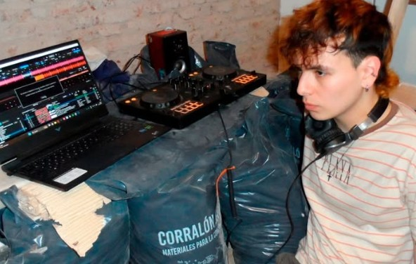
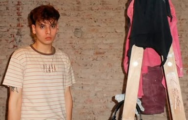
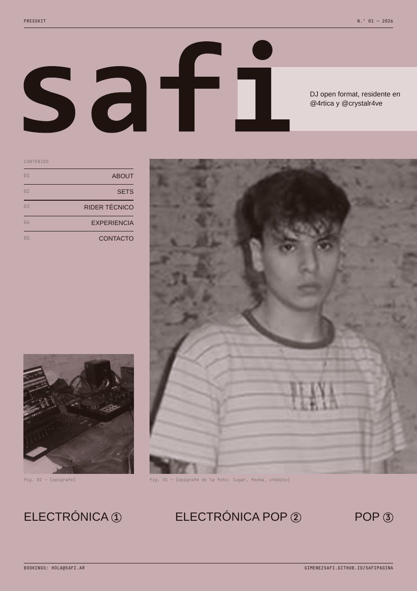
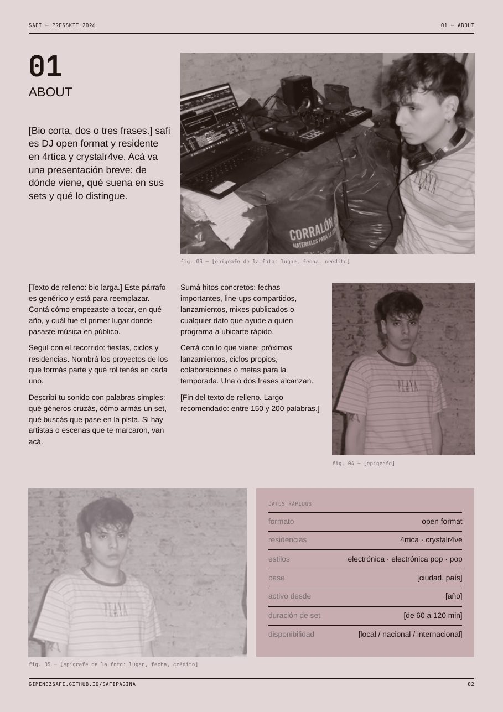
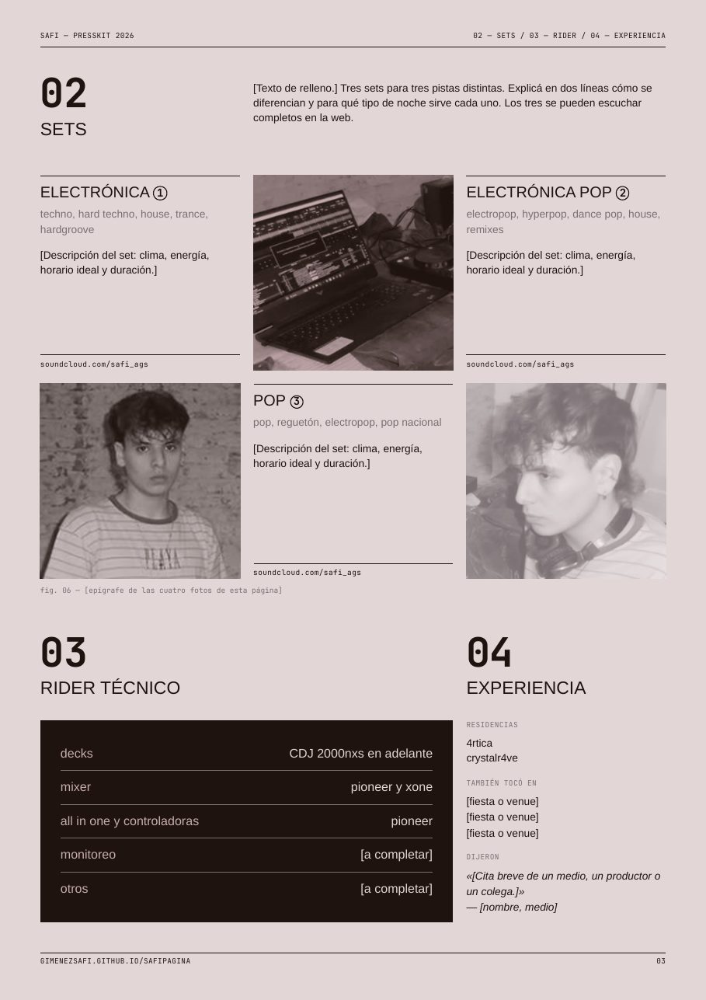
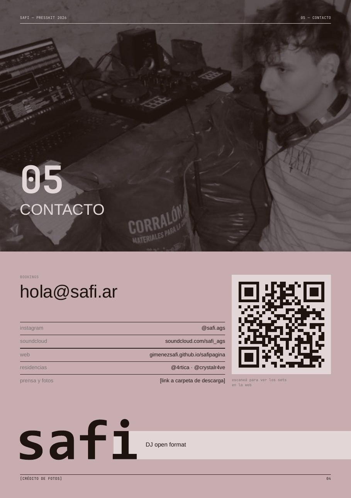

bookings: hola@safi.ar






safi es DJ open format, residente en 4rtica y crystalr4ve. Sus sets van de la electrónica al pop: techno, hard techno, house, trance y hardgroove de un lado; pop, reguetón y pop nacional del otro, con la electrónica pop como puente.
descargar presskit bookings: hola@safi.ar